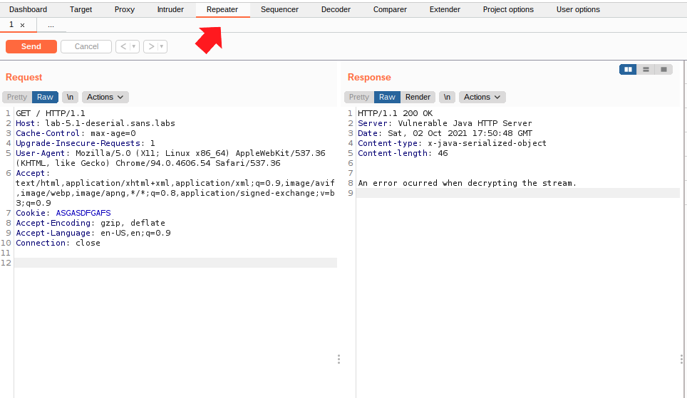
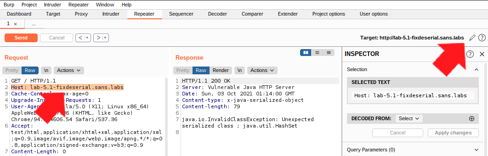

Deserialization and DNS Rebinding
Objectives
Hands on practice for deserialization attack and defense and DNS rebinding issues.
Estimated Time: 15 minutes
Part 1:
In this exercise, you will learn about DNS rebinding issue and will see for yourself a practical way that attacker can use Javascript to get around the anti-DNS rebinding mechanism of the browsers.
Part 2:
In this exercise, you will learn about the deserialization attacks mechanics.
Part 3:
In this exercise, you will learn about the mitigations of deserialization attacks.
Requirements
- [x] Lab VM
Part 1: Simple DNS Rebinding
No Hints
There are two parts to this exercise. In the first part, you will experiment with DNS rebinding without taking advantage of JavaScript. The second exercise explores the use of JavaScript and XMLHTTPRequest to profile the anti-DNS rebinding done by the browser. Start at http://lab-5.1-evil.sans.labs/evil.php.
Step by Step
In this exercise, we will explore the possibilities of DNS rebinding (anti-DNS pinning) attacks firsthand. The attack demonstrated is dependent on the DNS record timing out within the browser, and then the attacker can rebind another host, making the victim\'s browser confused about the actual IP of the host it is trying to reach.
-
Using Chrome, browse to http://lab-5.1.sans.labs/evil.php. This is the "Good Dog Pics" page. The host you are connecting to is lab-5.1.sans.labs.
Note
The host name lab-5.1.sans.labs have dog picture. Watch how this fact is important later.
-
We are now going to the attacker's controled site. Using Chrome, browse to http://lab-5.1-evil.sans.labs/evil.php. The host name is similar to the one in previous step but this is a different site. The content are also different as well.
-
Click on CLICK HERE TO SWITCH DNS. This will start the process of DNS rebinding.
-
You will be presented with a Javascript prompt. This triggers a DNS changes on the server end as indicated by the content of the pop up box. The IP for the lab-5.1-evil.sans.labs was 127.0.5.11 and it is being changed to 127.0.5.1. What that means is anyone asking for the IP of lab-5.1-evil.sans.labs will now be presented with 127.0.5.1.
-
After about 2 minutes, reload the page in the browser. Notice the URL? It is still http://lab-5.1-evil.sans.labs/evil.php but the content in the page are coming from the "Good Dog Pics" page which is at the IP address 127.0.5.1.
Note
The exercise starts off with the browser visiting lab-5.1-evil.sans.labs (127.0.5.11). At this time, the browser has the IP of the host pinned. After around 120 seconds when the DNS TTL expires, we reloaded the page. This time, the sans.labs DNS replies that lab-5.1-evil.sans.labs is located at 127.0.5.1 (not the same as before). This IP happens to be the server for lab-5.1.sans.labs (the Dog page). The Same Origin Policy has been violated with the time out and second DNS query since your browser URL is pointing to one domain and the content is coming from another location.
-
After this exercise, please click the Reset DNS and restart the browser to ensure all cached host records (DNS pin) is gone.
Part 1: JavaScript based Rebinding with XMLHTTPRequest
Similar to the DNS rebinding with the browser, the JavaScript engine can also be fooled as well. Its DNS pinning mechanism is actually isolated from the browsers.
-
Using Chrome, browse to http://lab-5.1-evil.sans.labs/eviljs.php
-
Similar to the previous exercise, we start off with the evil cat's page and Javascript immediately kick into action to change the DNS in the background. There is a long wait for the DNS pin to expire within the JavaScript engine. Review the change in the Javascript prompt and then click "OK".
-
The JavaScript automatically count down. In the background, every second there is a fetch request being sent to determine if the DNS pin has been lifted by the browser so the DNS would be re-queried and therefore change to the alternative host.
-
After about 100 seconds, the Chrome browser will lift the DNS pin and the JavaScript detects this and send the attack to the alternative host.
Part 2:
-
Using Chrome, browse to http://lab-5.1-deserial.sans.labs/ This site shows an animal shelter page.
-
Ensure that the Chrome is set to sending all browser traffic through Burp - the ProxySwitcher in Chrome (upper right hand corner of browser window) should be "red" in color.
-
In Chrome, refresh the page. You will not see any response as the request is intercepted by Burp.
-
Switch over to Burp. Make sure you are look at Proxy tab and Intercept sub-tab. Allow all traffic to pass without modification. Keep clicking on "Forward" in Burp's Proxy Intercept. This allows Burp to cache the request for our manipulation. The browser should show the same page as earlier (Animal Shelter)
-
In Burp window, under Proxy tab, select the HTTP history which will show you the HTTP requests that were intercepted by Burp. We are specifically interested in the request to the http://lab-5.1-deserial.sans.labs/ page (via GET request). Please highlight (left click) on the entry for this page. Refer to the screenshot below
-
Right click on the request from the above step. This will bring up a large drop down menu of which you can select the actions you want to take against this pre-captured request. In this case, we will select Send to Repeater
-
Select the Repeater tab. This will bring up the HTTP request that we selected earlier and ready for us to manipulate and re-send. Refer to screenshot below

- The left side of the pane is for editing and preparing the request for submission to the server. Our intent is to edit this request by adding a Cookie header and value. Copy the line below and paste to the header portion of the request to the server (header line order does not matter). Once you pasted the line into the header, click on Send (just above the request, in orange color)
Cookie: ASDFG
-
That request returns as a 200 code with a message in the HTTP body. "An error ocurred when decrypting the stream" This tells us that there is some kind of stream processing in place at the server. This maybe a deserializer that is processing the data in the request. This is the time to attack this component. We will need a gadget and a "command" to run to form an attack payload for this attack to work.
-
For the purpose of this exercise, we will assume that the attacker wants to execute the command 'cat /etc/passwd' in the target machine. We will still need a gadget for this to work. From the HTTP response header, we know that the server environment is running Java. Let's pick up some Java gadget for this attack. The most popular attack module for Java deserialization gadget is Ysoserial (https://github.com/frohoff/ysoserial) which we have integrated into the virtual machine for you to use (in the /home/student directory).
-
To run the ysoserial to acquire a usable payload, we will need to use it via the command line (Launch a terminal window to run it). The syntax looks like the following,
java -jar ysoserial-master.jar
We know the command we want to run is 'cat /etc/passwd'. We still need payload type as argument. See below, for payload type reference
Usage: java -jar ysoserial.jar [payload] '[command]'
Available payload types:
Payload Authors Dependencies
------- ------- ------------
AspectJWeaver @Jang aspectjweaver:1.9.2, commons-collections:3.2.2
BeanShell1 @pwntester, @cschneider4711 bsh:2.0b5
C3P0 @mbechler c3p0:0.9.5.2, mchange-commons-java:0.2.11
Click1 @artsploit click-nodeps:2.3.0, javax.servlet-api:3.1.0
Clojure @JackOfMostTrades clojure:1.8.0
CommonsBeanutils1 @frohoff commons-beanutils:1.9.2, commons-collections:3.1, commons-logging:1.2
CommonsCollections1 @frohoff commons-collections:3.1
CommonsCollections2 @frohoff commons-collections4:4.0
CommonsCollections3 @frohoff commons-collections:3.1
CommonsCollections4 @frohoff commons-collections4:4.0
CommonsCollections5 @matthias_kaiser, @jasinner commons-collections:3.1
CommonsCollections6 @matthias_kaiser commons-collections:3.1
CommonsCollections7 @scristalli, @hanyrax, @EdoardoVignati commons-collections:3.1
FileUpload1 @mbechler commons-fileupload:1.3.1, commons-io:2.4
Groovy1 @frohoff groovy:2.3.9
Hibernate1 @mbechler
Hibernate2 @mbechler
JBossInterceptors1 @matthias_kaiser javassist:3.12.1.GA, jboss-interceptor-core:2.0.0.Final, cdi-api:1.0-SP1, javax.interceptor-api:3.1, jboss-interceptor-spi:2.0.0.Final, slf4j-api:1.7.21
JRMPClient @mbechler
JRMPListener @mbechler
JSON1 @mbechler json-lib:jar:jdk15:2.4, spring-aop:4.1.4.RELEASE, aopalliance:1.0, commons-logging:1.2, commons-lang:2.6, ezmorph:1.0.6, commons-beanutils:1.9.2, spring-core:4.1.4.RELEASE, commons-collections:3.1
JavassistWeld1 @matthias_kaiser javassist:3.12.1.GA, weld-core:1.1.33.Final, cdi-api:1.0-SP1, javax.interceptor-api:3.1, jboss-interceptor-spi:2.0.0.Final, slf4j-api:1.7.21
Jdk7u21 @frohoff
Jython1 @pwntester, @cschneider4711 jython-standalone:2.5.2
MozillaRhino1 @matthias_kaiser js:1.7R2
MozillaRhino2 @_tint0 js:1.7R2
Myfaces1 @mbechler
Myfaces2 @mbechler
ROME @mbechler rome:1.0
Spring1 @frohoff spring-core:4.1.4.RELEASE, spring-beans:4.1.4.RELEASE
Spring2 @mbechler spring-core:4.1.4.RELEASE, spring-aop:4.1.4.RELEASE, aopalliance:1.0, commons-logging:1.2
URLDNS @gebl
Vaadin1 @kai_ullrich vaadin-server:7.7.14, vaadin-shared:7.7.14
Wicket1 @jacob-baines wicket-util:6.23.0, slf4j-api:1.6.4
Free hint
- Be aware that ysoserial-master.jar is in /home/student.
- Let's start with CommonsCollections family of payload type
In order to run the payload, you will also need to base64 encode the payload for Java to be able to exec it. The base64 shell command is for that purpose
Free hint
- base64 -w 0 will help encode the payload
- You will want to chain the two commands together via the Unix pipe (|). For example java -jar ...... | base64 -w 0
The payload should be in a Cookie: header as we determined in earlier step that the cookie content maybe serialized and therefore potentially vulnerable to attacks
Free hint
- Put a Cookie:
into the Burp Repeater template we already setup earlier.
- Determine the correct payload for attacking the deserialization vulnerability which is the subject of the NetWars challenges. Use hints to help you as necessary. Save this exploiting string for the next part of the exercise.
Part 3:
In this part, we will learn about the fixing of the deserialization vulnerability.
- In Burp, go to the Repeater tab where we already setup the template for sending the exploit payload over Cookie header to the server. Please change both the Host: header in the left pane and also the Target on the upper right hand corner. See below screen cap on where you need to change the values. For both, the host name that we are targeting is lab-5.1-fixedserial.sans.labs This is a fixed, no longer vulnerable version of the previous target. The code base is the same except the vulnerability has been fixed.

-
Using the same attack payload as before (part 2, cookie). Please send the attack to this non-vulnerable version and see what happens. You should observe that the server respond with the following message.
java.io.InvalidClassException: Unexpected serialized class ; java.util.HashSet
-
It appears that this version of the application is blocking the request based on the class of objects that are being sent in the stream of data. We will inspect the source code of the application to answer the NetWars challenge. Please
-
Open /etc/docker/compose/5.13/docker-java/FixedHTTPServer.java in an editor (Visual Studio Code) to review the code. The subject of the challenge pertains to this file. Please use the hints in NetWars as required.
Credit of the deserialization exercise - J.Jogal (https://www.thedarksource.com/) and Karan Solanki (https:/www.themixstuff.com/). More information at https://thedarksource.com/vulnerable-java-deserialization-lab-setup-for-practice-exploitation/
Conclusion
- DNS rebinding allows attacker to "confused" the browser into loading content from a different origin than what's specified by the host name and domain name.
- Deserialization can affect any types of input within the applications that takes in a serialized stream and attempting to deserialize the data without performing appropriate filtering or validation.
- Untrusted data being deserialized into Class of objects within the running application can be dangerous, potentially letting attack execute arbitary code in the environment.
Explore Further
- Deserialization vulnerability relies on untrusted data being deserialized by the application. Another dependency of the successful attack is the gadget chain, please explore the gadget involved in the attack(s) you have conducted.